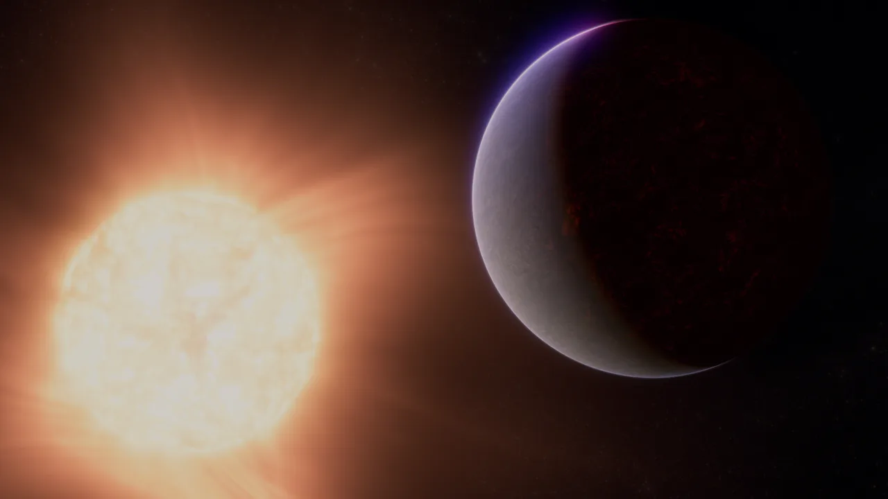

8. Mai 2024
Hinweise auf eine Atmosphäre um einen Gesteinsplaneten
Beobachtungen des James Webb Space Telescope liefern den bisher besten Hinweis auf eine Atmosphäre um einen Gesteinsplaneten außerhalb des Sonnensystems. Die Supererde 55 Cancri e ist etwa doppelt so groß wie die Erde und umkreist ihren 41 Lichtjahre entfernten Stern so eng, dass ihre Oberfläche vermutlich von einem Ozean aus Magma bedeckt ist. Die Messungen deuten auf eine Atmosphäre hin, die reich an Kohlendioxid oder Kohlenmonoxid ist und ständig aus dem Magma nachgeliefert werden könnte.
Quelle: ESA/Webb: "Webb hints at possible atmosphere surrounding rocky exoplanet." Online; esawebb.org; 08.05.2024